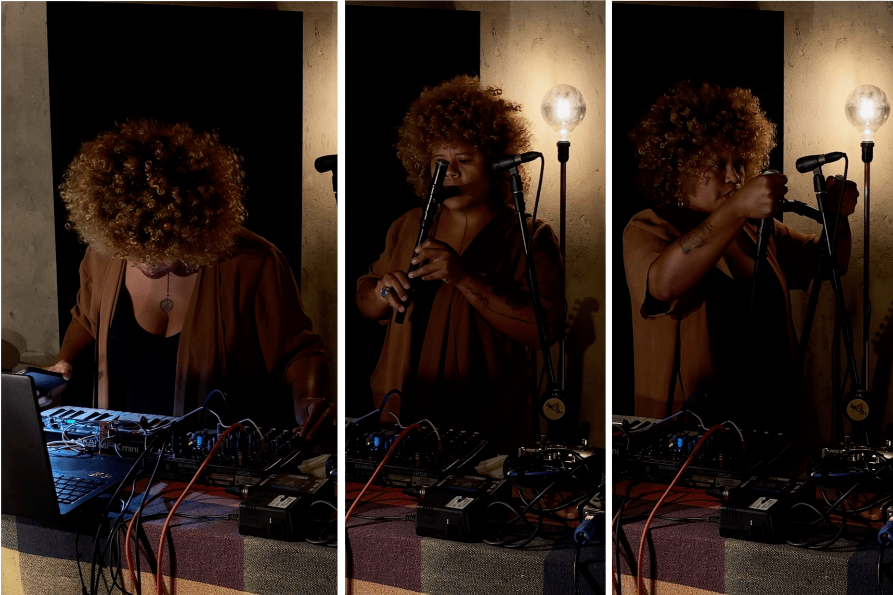
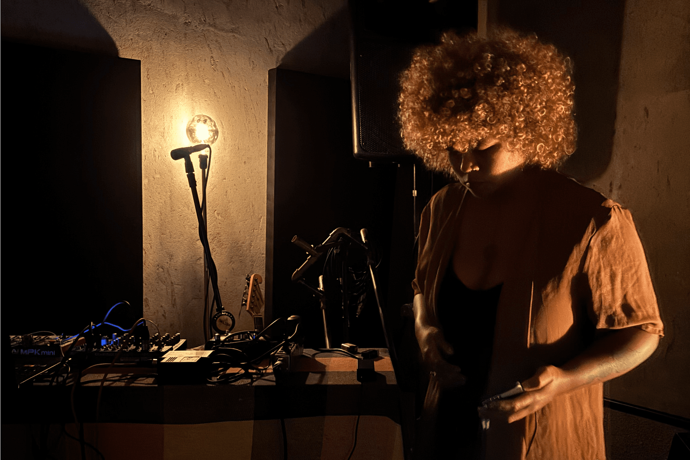

SONA presents KAYA

Since childhood, Roberta Kaya knew that music was not just technique, but also a way of being in the world. One of her earliest memories is climbing up a pitomba tree to sing. That gesture already reveals much about her listening, rooted in environment, body, and sensation. When the tree was cut down, sunlight entered harshly into the place where there had once been shade. This loss resonated like a fracture in the landscape, and it also shaped the way she relates to sound: as something alive, mutable, and subject to ending.
This intimate and transient way of listening to the world runs through Kaya’s entire artistic practice. Her music seems to weave narratives that conjure presences and lay bare absences. Her instruments, often built by her own hands, carry a deliberate precariousness, as if each sound were an attempt to capture something on the verge of vanishing. The piano loops that sometimes anchor her performances function as a provisional ground: they offer structure, but are soon interrupted, destabilised by the entry of new timbres and noises, tested there in real time, before the audience. Rather than separating planning and action, Kaya seems to fuse the two into an intuitive process, where error is learning, and sound may emerge from the accident that is welcomed.
In Kaya’s music, technology is tool but also protagonist. Her instruments (handmade pedals, PVC pipes blown like flutes, home-built synthesisers) are assembled with improvised solutions. The making of these devices is directly bound to the way they are presented. Each enters the scene as a character, revealed to the audience with care, in a gesture of sharing.
This way of introducing sonic elements as if they were characters recalls the performances of multidisciplinary artists such as Concepción Huerta and Jiyoung Wi. In their recently released collaborative cassette on the Aurora Central label, the Mexican and South Korean artists build dense soundscapes from layered field recordings, analogue synthesisers and live-manipulated instruments such as a distorted, fragmented violin. Their performance emphasises a tactile relationship with devices, where exposed wires, visible patches, faults and noises are not hidden but integrated into the language of the work.
Another significant example within this aesthetic frontier between sound, space and object is the Brazilian collective Chelpa Ferro (1995–). Formed by visual artists, the group creates installations and performances that merge noise, music and sound sculpture, placing sound as a structural element of an expanded sensory experience. The physical presence of objects, the exposed cables, the juxtaposition of noises and images, as well as the performative relation to space, reinforce the idea that music can be as much a tactile as an auditory experience. This poetics of sound, moving between organised disorder and partial control, finds an echo in Kaya’s work, which also values materiality and imperfection in her instruments and performances.
A striking example is the video Performance Sonora (pretasonora) (2025), available on her YouTube channel. In it, Kaya engages with a kind of sound sculpture: a structure made of metal, wood and PVC pipes, equipped with contact microphones (piezo) that capture vibrations directly from the materials. These sounds are processed live with effects such as reverb, delay and distortion, creating dense and unpredictable sonic textures. The structure features wires, coiled springs, screws and hanging bolts, composing a hybrid object between instrument and installation.

Kaya explores it with her fingers, but also with tools such as screwdrivers and a file. At one point in the video, she scatters stones across the metal surface and manipulates them slowly, drawing out new noises from friction and contact. Here, the aim is not to build conventional melodies or harmonies, but to explore the acoustic properties of objects, how they vibrate, resonate, and respond to touch, in an approach that shifts music into the territory of sensory and spatial investigation. She also employs a wind instrument built from PVC pipe, its sound digitally transformed.
That same wind instrument reappears in the tracks Kaya recorded exclusively for SONA. The use of homemade instruments brings a sense of continuity between her sound art and her music. It is not simply about reusing materials or timbres, but about insisting on a single poetic logic regardless of the chosen path: to explore sounds through the physicality of objects and through improvisation.
In Synthindo, musical ideas unfold continuously, as though sprouting organically from one another. Guitar, PVC pipes, MIDI controller and loops intertwine in the construction of a sonic dramaturgy: a non-verbal narrative in which sonic gestures unfold into small scenes, like in an abstract theatre. Each sound is treated as a body, each instrument as a singular voice.
In Plastycidade, Kaya explores her homemade wind instrument, built with two openings that she covers or reveals with her hands to control the intensity and vibration of the sound. Through creative use of delay, she layers different phrases played on the instrument, creating a density that transforms the breath into an “organic drone”, as she calls it, almost human. This image reinforces the way the handmade and the technological intertwine in her practice.
Her relationship with electronics, for instance, rests on attentive listening to the possibilities and limitations of her own devices. Working with homemade instruments, sound is not shaped to be clean, controlled or predictable. It is precisely in the physical limits of materials that Kaya finds new aesthetic possibilities.
This approach brings her music close to the principles of glitch art, a visual and sonic language that appropriates technical failures, bugs and interferences as creative resources. Rather than correcting what goes astray, Kaya emphasises breakages and disruptions. There is a certain pleasure in destabilising. Just as glitch art interrupts the smoothness of the digital image to expose its innards, Kaya’s music imposes moments of failure, suspension and noise that place the listener in a state of alertness.
In Synthindo, for example, it is possible to hear how bases and textures that seemed to support the sonic flow are suddenly withdrawn, leaving behind a momentary void, almost as if the ground had disappeared. The artist says she “likes it this way”, that her music provokes a sense of disorientation, a kind of estrangement that keeps the listener open, imagining what else could emerge or what might have been. This refusal to deliver a comfortable structure is also a way of affirming an active, critical listening, one that embraces uncertainty as a creative value.
For Kaya, this uncertainty cuts through her decisions as an artist. As a multi-instrumentalist, she defines herself as a “Jack of all trades, master of none”, an affirmation that, far from denoting insecurity, reveals a clear aesthetic stance. It is within this space of trial and error, sometimes unstable, sometimes surprising, that her creation takes shape and intensity.
This openness to the unknown has roots in a sensitivity that Kaya often associates with childhood. She says she feels her childhood still very close, not as nostalgia but as a living presence. For Kaya, play is a legitimate and powerful form of sonic research. By placing play at the centre of the creative process, she challenges the idea that art must be grand to be relevant. She insists that her goal is not to become “a great star” or “an immortal artist”, but to cultivate well-being, both individual and collective, here and now.
In this context, more than an escape or a distraction, play is a stance that rejects the productivist and competitive logic that often governs artistic practice. In Kaya’s work, this playful dimension does not imply a lack of rigour, but reveals an ethic that finds, in sound, pathways to imagine other ways of living and relating to the world.

Henrique Gomes is the editor of SONA Magazine, a researcher, and an enthusiast of experimental practices in sound and art.